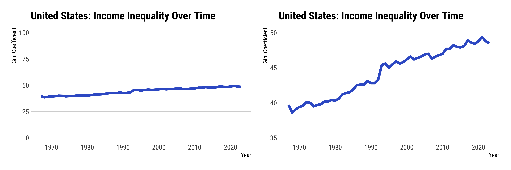
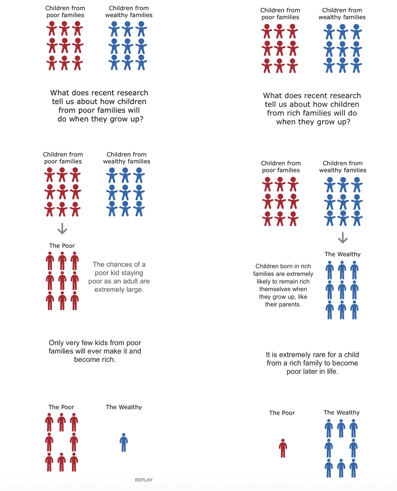
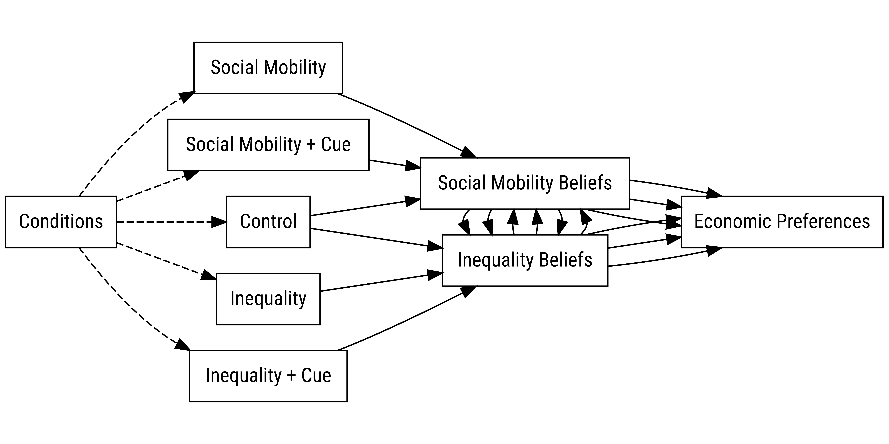
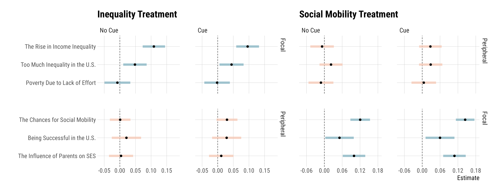
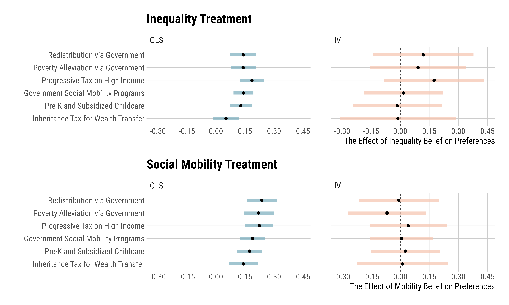
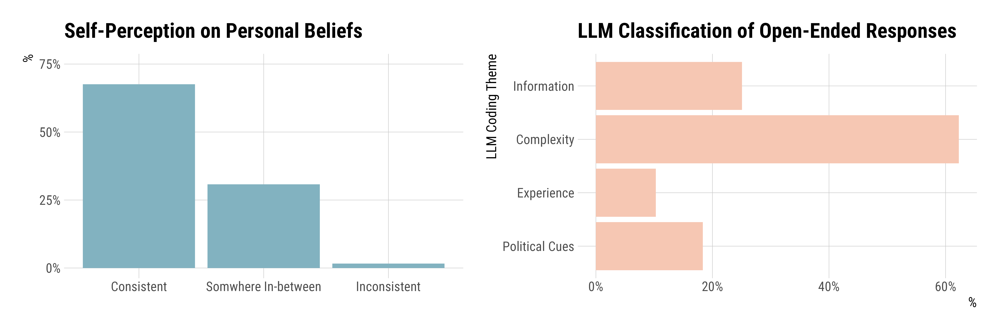

Dynamic Constraint and Other Beautiful Lies
The concept of “dynamic constraint”1 has been hanging around political science and sociology quarters like an old mythical creature: it’s always cited, often hoped for, regularly tested, and rarely found. I know at least a dozen incredibly clever people who have gone looking for it in the wild with usually “mixed” or negative findings, or at least, results that are hard to interpret.
1 The notion that when people change their mind about one belief, they also change other related beliefs to stay logically or ideologically consistent.
Almost all of us file-draw our trials, since most of us think that even though dynamic constraint works in theory quite well, the empirics are just too hard to pin down: (a) large and durable changes in political preferences are rare, (b) there are numerous political influences which may affect an individual’s propensity to update, and (c) even though experimental interventions can induce effects, they are small, short-lived, and reliant on questionable assumptions on “change.”
Well, against this background, naturally, I decided to give it a go myself.
I wrote up a tidy little theory, preregistered an experiment, ran it with over 2,400 respondents, and found exactly what everyone else seems to find: strong updates on one’s focal belief, and nothing for everything else. I decided not even trying to publish it. So here it is—the article, the results, and the wasted grad student money. As a responsible citizen, of course, I am sharing the data and code here. Do with it what you will. I am hoping that someone out there will prove or kill it one day.
Below is the full theory as originally written (well, slightly original), for those curious enough to read. The write-up for experiment and findings is sketchy. But—at least—I have pretty figures!
A Tidy Little Theory
Studies of political belief systems propose that many citizens hold beliefs and preferences that “go together” at a single point in time—what Converse (1964) calls static constraint (see Boutyline and Vaisey 2017; Brandt and Sleegers 2021; Fishman and Davis 2021). However, it is far less common for people to exhibit dynamic constraint, the tendency for a change in one belief to induce congruent updates in logically or sociologically related beliefs. While there are strong cognitive accounts of why people might seek consistent belief states (Osgood and Tannenbaum 1955; Heider 1946; Cartwright and Harary 1956), the experimental evidence suggests that dynamic constraint remains weak in both mass and elite populations (Coppock and Green 2022; Turner-Zwinkels and Brandt 2022).
One promising explanation attributes this pattern to “cognitive intractability.” When presented with information, people may update the focal belief that the new information makes salient, but rarely retrieve “distal” considerations unless explicitly prompted to do so (Sommer, Musolino, and Hemmer 2023). Because a full search of memory is often unfeasible, individuals tend to rely on whatever beliefs are most accessible at any time. Hence, when confronted with new information, people might only allocate scarce cognitive resources to “constrain” their belief networks (Simon 1955).
This view implies that it may indeed be possible to observe dynamic updating if people could observe connections between issues explicitly. Suppose that an actor has a focal belief, \rho_i, as well as a peripheral belief, \rho_j.2 If this actor’s beliefs were fully tractable, they would prefer a cognitively consistent state; hence, there is a penalty \lambda > 0 from inconsistent belief states. Suppose that there is an action set, a \in \{0, 1\}, where 1 denotes a consistency-seeking belief system search and 0 denotes no action. This means that if an actor engages in a = 1, the search will move \rho_j to \tilde\rho_j = \rho_i, eliminating dissonance. That said, belief system search comes with a search cost, k. Suppose now that this cost might be lowered with exogeneous cues c \in (0,1], where c = 1 means no cue from the environment. Therefore, mechanisms like elite framing or associative learning serve as cognitive cost reduction processes. In this setting, the utility model captures a fundamental tension:
2 Assume that \rho_i and \rho_j are continuous, bounded between 0 and 1, and similar in direction.
U(\rho_j, a) = - (1 - a)\lambda(\rho_i - \rho_j)^2 - ack \tag{1}
Here, the final decision rule is simple: when \lambda(\rho_i - \rho_j)^2 < ck, the actor has no incentive to engage in consistency-seeking belief system search, which characterizes most experimental contexts.
The model implies that if there is a cue—thus lower c—the actor can spend fewer resources to update beliefs. The corresponding generative model for this prediction is rather simple: when presented with information, a person will update their focal belief, but the distal or peripheral belief will be dynamically updated only when there is a cue that connects the focal belief to the peripheral belief. If memory search is indeed costly, cues that tie one issue to another can provide a low cost alternative for achieving consistent or congruent beliefs. In this sense, dynamic updating might occur when the environment actively supplies cues that make the otherwise “latent” link between issue considerations explicit, as this would lower retrieval costs.
Three hypotheses below summarize the main empirical predictions:
- Hypothesis 1: When an individual encounters credible factual information about a focal issue, they should update their beliefs in the same direction as the evidence.
- Hypothesis 2: Since belief system search is usually costly, such updates should not extend to conceptually related but unmentioned issues in the absence of cues.
- Hypothesis 3: Providing individuals with explicit cues linking the focal issue to a peripheral issue should result in cross-issue updating, generating coordinated belief change.
That is it! These are the hypotheses I set out to prove.
Testing the Beautiful Lie
I test these propositions in a pre-registered survey experiment that builds on Coppock and Green’s (2022) information design. I randomly assign respondents (N = 2{,}414) to view factual information about either income inequality or social mobility in the United States, with and without an explicit cue indicating that the two issues are conceptually linked.3 While the treatments target “focal” beliefs within their respective domain—aiming to generate strong first-stage effects—the interest lies in whether these effects would produce spillover effects in peripheral domains. For income inequality, I asked people about whether the income inequality in the U.S. has risen, whether there is too much inequality in the U.S., and whether poverty is due to lack of effort. For social mobility, I asked about whether the chance for social mobility in the U.S. is high, being successful in the U.S. and the parents’ influence on one’s socioeconomic status in the adulthood.
3 Resulting in five-arms.
Figure 1 documents the “inequality treatment,” which relies on the same underlying data, but with a simple graph scaling manipulation from Trump and White (2018).
 |
|---|
| Figure 1: Inequality Treatment; Control on the Left; Treatment on the Right |
Figure 2 documents the “social mobility treatment,” which uses Alesina, Stantcheva, and Teso’s (2018) informational animation on social mobility in the U.S.:
 |
|---|
| Figure 2: Social Mobility Treatment |
Again, the expectation is that each of these treatments will affect people’s focal beliefs on the salient issue (Figure 1 for inequality beliefs and Figure 2 for mobility beliefs).
Cues. In two additional conditions, these treatments are followed by cues that remind people that the focal issue can be connected to the peripheral issue. To do so, I simply assigned people to one of two treatments, but after each treatment, I cued them on relationships between issues.
After the inequality treatment, respondents in Condition 4 saw:
- Some experts suggest that income inequality may be linked to differences in social mobility, that is, the ability of individuals to move up or down the economic ladder.
Similarly, after the social mobility treatment, respondents in Condition 5 saw:
- Some experts suggest that limited social mobility may be connected to income inequality over time, too.
Figure 3 depicts the experiment (and the subsequent survey flow) in its five-arms:
 |
|---|
| Figure 3: The Summary of the Experimental Setup |
In exploratory analyses, I examine (a) whether changes in beliefs spill over into economic preferences, (b) whether people perceive their beliefs as consistent or inconsistent, and (c) how they engage in explicit political reasoning to explain these self-perceptions.4
4 Everything is preregistered, as presented in osf.io/u49av.
The Findings from this Exercise
The analyses below show that the information treatments substantively change beliefs about their target issues (confirming H1), while leaving non-target beliefs unchanged in both the no-cue and cue conditions (confirming H2 and rejecting H3). Let me go over them one by one.
In Figure 4, we see that the focal beliefs (indexed as blue items) update in the treatment groups compared to the control group. These updates occur both in the no cue (Conditions 2 and 3) and cue (Conditions 4 and 5) conditions, with roughly similar estimates. When it comes to the spillover of these treatments to peripheral issues, however, we see that neither the no cue condition nor the cue condition can actually channel a spillover effect. While the effects are in the expected direction in the cue conditions, these are statistically insignificant and highly imprecise.
 |
|---|
| Figure 4: The Treatment Effects Across Issues and Conditions |
In exploratory analyses, I looked at the spillover effects from beliefs to preferences. Figure 5 shows these results. On the left, we see the OLS estimates of each preference when they are regressed on a belief statement: the rise in income inequality for the inequality treatment and the chances for social mobility for the social mobility treatment. On the right, you see the same relationship in a simple IV context where I used a 2SLS model with the experimental condition serving as the instrument for the focal belief in each condition. Once again, there is no evidence of dynamic constraint.
 |
|---|
| Figure 5: The Relationship Between Beliefs and Preferences |
Finally, I showed respondents their answers on the rise in income inequality and the chances for social mobility, and asked them whether they think that their responses to these questions are consistent. As seen in Figure 6, the majority of people reported that their responses are “consistent,” though—LLM classified—open-ended responses of people who state that their responses are somewhere in between or inconsistent often talk about how “complicated” or “complex” these issues are. A lot of them noted several informational sources as well.
 |
|---|
| Figure 6: X |
Why This Exercise May Matter?
These findings further delimit the scope of dynamic constraint: merely making an inter-issue connection explicit is insufficient to produce coordinated belief change. More importantly, this (null) finding may be another reason why dynamic constraint may not be the generative process through which political belief systems form in the first place.